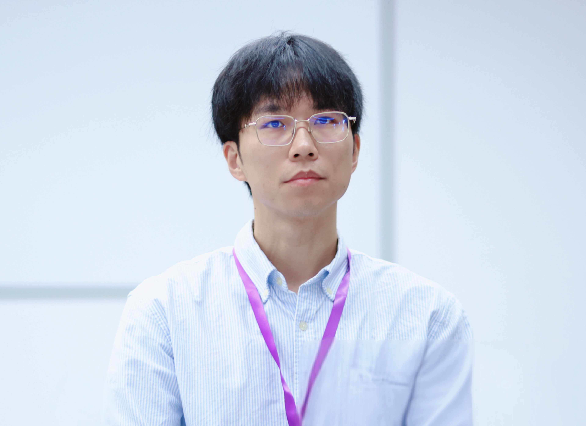

吴谦
我主要从事运筹学与网络优化相关研究。近年来，我的兴趣也逐渐扩展到大型语言模型的伦理使用、 治理问题，以及 AI 对高等教育和人的主体性的影响。这个页面将作为我的中文入口， 用来整理研究、教学、随笔和较长时间尺度上的思考。
随笔与札记
这里会放一些关于 AI、教育、哲学、研究写作和日常生活的中文文章。
你问 AI 问题的时候，到底是“谁”在回答你？
这个系列讨论大语言模型为什么既不是完整的对话参与者，也不只是普通工具， 而是一种占据“应答位置”的准参与性语言装置。

我主要从事运筹学与网络优化相关研究。近年来，我的兴趣也逐渐扩展到大型语言模型的伦理使用、 治理问题，以及 AI 对高等教育和人的主体性的影响。这个页面将作为我的中文入口， 用来整理研究、教学、随笔和较长时间尺度上的思考。
这里会放一些关于 AI、教育、哲学、研究写作和日常生活的中文文章。
这个系列讨论大语言模型为什么既不是完整的对话参与者，也不只是普通工具， 而是一种占据“应答位置”的准参与性语言装置。